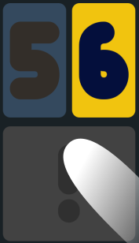
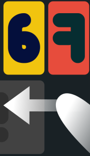
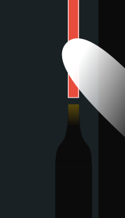

Thanks for trying out SQUAREDAYS!
Squaredays is a time management app that logs how you spend your time. It's being updated regularly as I do "field testing". :)
Please email me for any suggestions, bugs, comments, etc:
q335r49@gmail.com
|
Tap to start logging an ongoing task.
Long press to edit the task. |
|
|
Drag vertically or horizontally to adjust the duration and the starting time, respectively.
Ex: Task started 2 hours ago and lasted 40 minutes. (If no duration is specified the task is considered ongoing.) |
|
|  | Tap [!] to end a task.
Long press to add a new task. Dragging [!] vertically or horizontally will allow commenting a task or setting of an earlier end time, respectively. Ex: Task ended 10 minutes ago and lasted 40 minutes, with comment "Done". |
|  | Drag on the empty space to access the calendar. |
|  |
Pinch to zoom and swipe to pan the calendar.
Tap on a task to display its duration and comment. Long press on a task modify or remove it. |